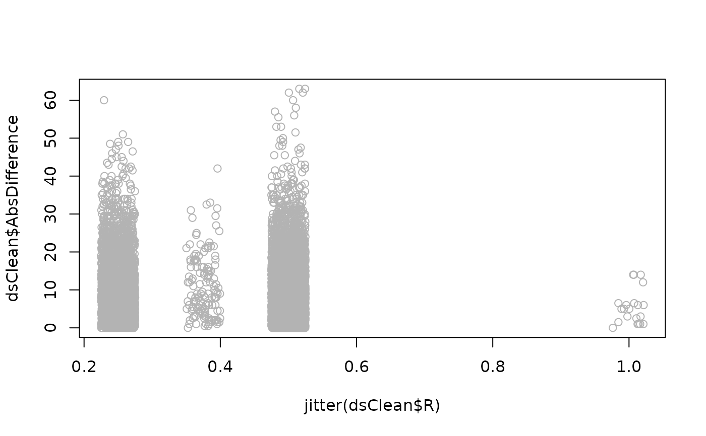

R/clean-sem-ace-dataset.R
CleanSemAceDataset.RdThis function takes a 'GroupSummary' base::data.frame (which is created by the RGroupSummary() function) and returns a base::data.frame that is used by the Ace() function.
CleanSemAceDataset(dsDirty, dsGroupSummary, oName_S1, oName_S2, rName = "R")This is the base::data.frame to be cleaned.
The base::data.frame containing information about which groups should be included in the analyses. It should be created by the RGroupSummary() function.
The name of the manifest variable (in dsDirty) for the first subject in each pair.
The name of the manifest variable (in dsDirty) for the second subject in each pair.
The name of the variable (in dsDirty) indicating the pair's relatedness coefficient.
A base::data.frame with one row per subject pair. The base::data.frame contains the following variables (which can NOT be changed by the user through optional parameters):
R The pair's R value.
O1 The outcome variable for the first subject in each pair.
O2 The outcome variable for the second subject in each pair.
GroupID Indicates the pair's group membership.
The function takes dsDirty and produces a new base::data.frame with the following features:
Only three existing columns are retained: O1, O2, and R. They are assigned these names.
A new column called GroupID is created to reflect their group membership (which is based on the R value). These values are sequential integers, starting at 1. The group with the weakest R is 1. The group with the strongest R has the largest GroupID (this is typically the MZ twins).
Any row is excluded if it has a missing data point for O1, O2, or R.
The base::data.frame is sorted by the R value. This helps program against the multiple-group SEM API sometimes.
library(NlsyLinks) # Load the package into the current R session.
dsLinks <- Links79PairExpanded # Start with the built-in data.frame in NlsyLinks
dsLinks <- dsLinks[dsLinks$RelationshipPath == "Gen2Siblings", ] # Use only NLSY79-C siblings
oName_S1 <- "MathStandardized_S1" # Stands for Outcome1
oName_S2 <- "MathStandardized_S2" # Stands for Outcome2
dsGroupSummary <- RGroupSummary(dsLinks, oName_S1, oName_S2)
dsClean <- CleanSemAceDataset(dsDirty = dsLinks, dsGroupSummary, oName_S1, oName_S2, rName = "R")
summary(dsClean)
#> R O1 O2 GroupID
#> Min. :0.2500 Min. : 65.00 Min. : 65.0 Min. :1.000
#> 1st Qu.:0.2500 1st Qu.: 90.00 1st Qu.: 90.0 1st Qu.:1.000
#> Median :0.5000 Median : 98.00 Median : 99.0 Median :3.000
#> Mean :0.4186 Mean : 98.24 Mean : 98.6 Mean :2.341
#> 3rd Qu.:0.5000 3rd Qu.:107.00 3rd Qu.:107.0 3rd Qu.:3.000
#> Max. :1.0000 Max. :135.00 Max. :135.0 Max. :4.000
dsClean$AbsDifference <- abs(dsClean$O1 - dsClean$O2)
plot(jitter(dsClean$R), dsClean$AbsDifference, col = "gray70")
